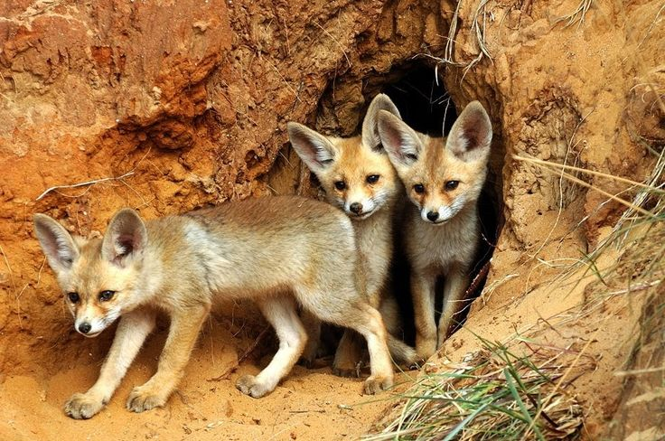

Decides acercarte con confianza. El cuervo te trajo hasta aquí por una razón. No vas a desperdiciar esta oportunidad por miedo.
Caminas hacia el claro donde están los otros zorros. Ellos te observan con curiosidad. Una zorra mayor se acerca primero, olfateándote, evaluándote. Sus ojos son sabios y gentiles.
Ella huele las cicatrices de tu enfermedad, percibe tu debilidad, pero también nota tu determinación. Gira su cabeza hacia los demás y hace un sonido suave. Es una señal de aceptación.
Los otros zorros se relajan. Un par de cachorros se acercan juguetonamente, olisqueando tus patas. Te están dando la bienvenida.
Este valle es un refugio secreto, un lugar donde zorros heridos, enfermos o rechazados encuentran comunidad. El cuervo ha guiado a muchos hasta aquí. Es su propósito - conectar a los que necesitan ayuda con los que pueden darla.
Los días que siguen son los mejores de tu vida. Aprendes a cazar con los demás, compartís el alimento, jugás con los cachorros. Tu cuerpo se fortalece rodeado de esta familia que elegiste.
Una noche, bajo las estrellas, pensás en tu cuidadora. Ella te salvó la vida, te enseñó que merecías amor y libertad. Y ahora, en este valle, encontraste ambas cosas.
Confiaste cuando era más fácil dudar. Seguiste adelante cuando era más fácil rendirte. Y al final, encontraste algo que nunca tuviste antes: una familia verdadera.
Tu cuidadora estaría orgullosa. No solo sobreviviste - prosperaste.